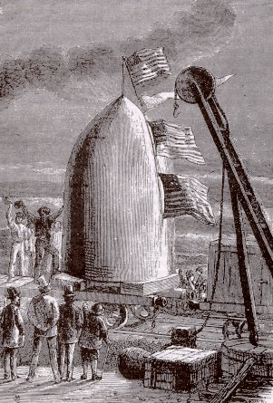
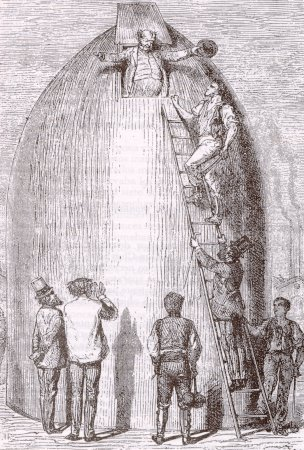
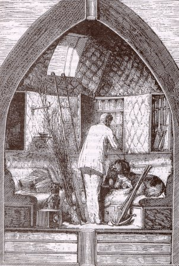
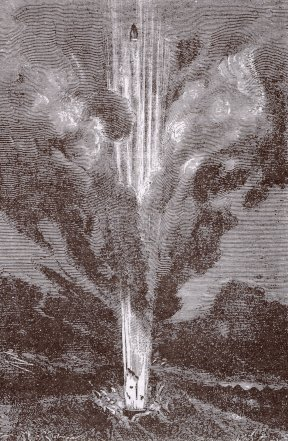
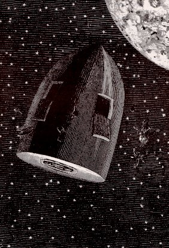

El Columbiad

Apareix a la novel·la "De la Terra a la Lluna" i és un canó gegantí destinat a propulsar un projectil des de la Terra fins a la superfície de la Lluna. Es tracta d'una iniciativa dels membres del Gun Club, una associació que agrupa antics artillers nord- americans ociosos després d'acabada la Guerra de Secessió i que veuen en aquesta empresa l'ocasió de retornar a l'enyorada activitat armamentística.

Les dimensions
del colossal canó atenyen una llargada de 900 peus (prop de 275 metres!),
un gruix de les parets de 6 peus (1,83 metres) i un diàmetre de 9 peus
(2,75 metres). Com que aquest monstre és impossible d'instal·lar
damunt una cucanya, i atès que s'ha d'apuntar cap al zenit, la solució
més simple consisteix a fondre'l a terra mateix, dins un pou preparat
per l'ocasió. El forat necessari es fa en vuit mesos i hi treballen
mil obrers. Simultàniament es fan les obres pertinents per adequar-lo
a la seva finalitat.
Per forjar el canó es necessiten seixanta mil tones de ferro fos que
s'aboquen en un motlle d'argila i sorra mitjançant mil dos-cents forns
que actuen simultàniament. Després d'allisat i polit el canó
està llest. Només resta carregar-lo. La càrrega està
constituïdaper 400.000 lliures de cotó fulminant (181.400 quilos).

La càrrega es farà detonar mitjançant l'electricitat produïda per una pila. El projectil que s'ha d'engegar a la Lluna és d'alumini i de forma cilindrico-cònica. És buit en el seu interior per poder transportar els astronautes. Està proveït de quatre ulls de bou lenticulars que a manera de lluernes permeten la il·luminació de l'interior. Les dimensions són de 9 peus de diàmetre exterior i 12 d'alçada. A la base hi existeixen potents ressorts continguts en tubs d'acer que han d'amortir la caiguda de l'obús damunt el sòl lunar

.
Per tal d'amortir l'impacte
del contracop que representa l'explosió del llançament, la bala-nau
posseeix en la seva base un dispositiu format per una planxa de fusta mòbil
ajustada a les parets sota la qual hi ha tres capes d'aigua separades per
envans de fusta. Les parets interiors són entapissades de cuir per
fer-les més toves. Arran de les parets hi ha divans circulars. Diversos
recipients contenen queviures i aigua. També hi ha uns dipòsits
que magatzemen gas per tal de fer funcionar la il·luminació
i la calefacció. La renovació de l'aire està assegurada
pel mètode Reiset i Regnault: l'oxigen és proveït pel clorat
de potassi escalfat a 400 graus Farenheit i el diòxid de carboni és
absorbit per la potassa càustica.

El Columbiad reeixirà en la seva missió d'enviar un projectil tripulat a la Lluna, però aquest no aconseguirà "allunitzar". Un meteor el desvia del seu rumb i fa que orbiti al voltant del satèl·lit. La força d'un nou meteor fa que emprengui el viatge de retorn. Finalment arriba a l'oceà Pacífic amb els seus ocupants sans i estalvis.